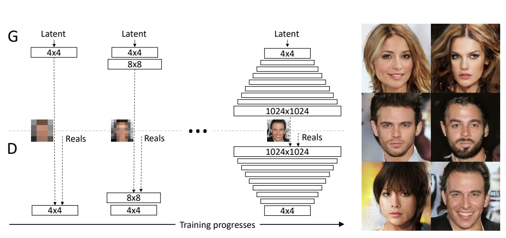
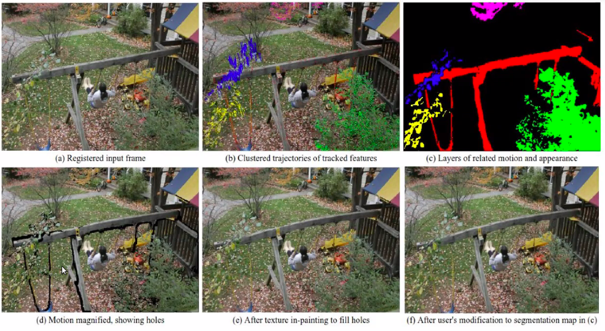
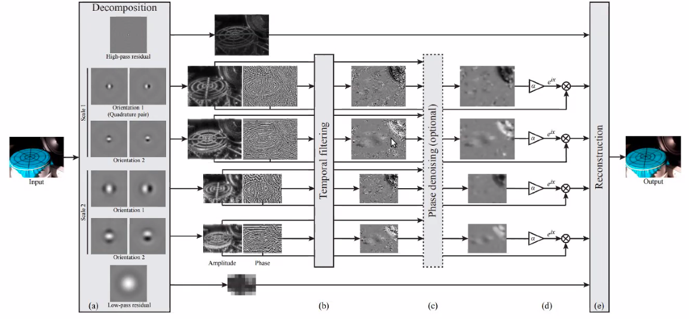
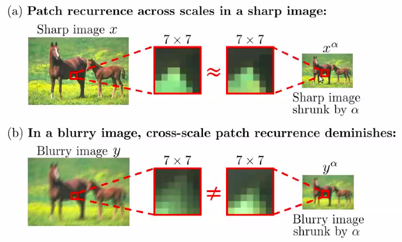
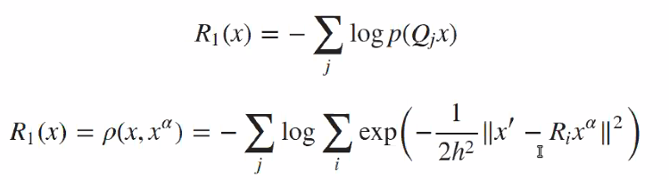
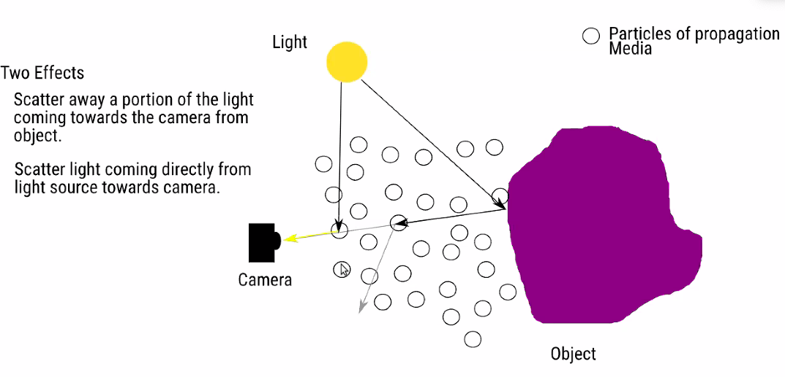
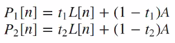
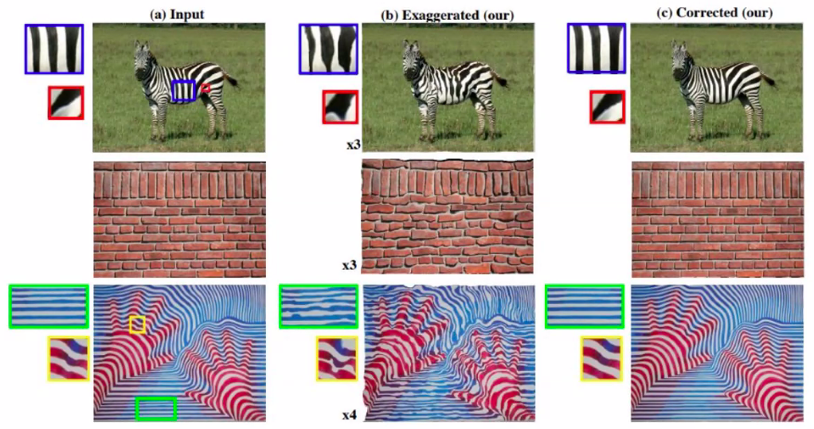
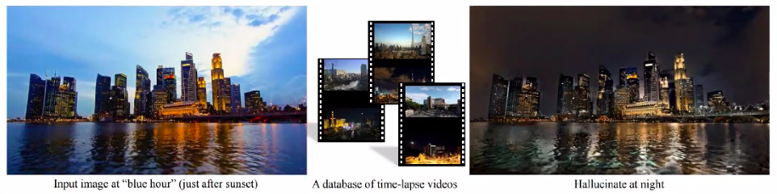

Computational Photography
- Computational Photography
- CG2REAL
- SEAM Carving
- Texture Synthesis
- Neural Style Transfer
- Poisson Image Editting
- Generative Adversarial Network
- Motion Magnification
Basically, enhance image by computation!
Intersection of 3 fields
- Optics
- Vision
- Graphics
Majorly two kinds of work
- Co-design camera and image processing (optics + vision)
- Use Vision to help Graphics to help generate better image faster!
CG2REAL
CG rendering is very computational intensive!
- Shape model
- Texture model
- Light transport is complex (huge number of )
How to make the expensive photorealistic rendering cheaper?
- Vision can help to swap in basic texture and object info into roughly rendered image (Use NN to enhance rendering! Add details to it! )
Johnson, CG2REAL 2010
The Pre-CNN Pipeline
- Find most similar images to a given one
- E.g. using SIFT keypoint features and match the descriptors
- Similar to content based image retriviel
- Co-Segmentation.
- MRF based way
- Local Style Transfer
- On matched region of source and target image.
- Match intensity and gradient histogram, in order to transfer texture.
Comments
- So-called image based rendering: doesn’t go back to physics, just render image better based on a given image.
SEAM Carving
Classic powerful algorithm. Extremely simple! Directly goes into Photoshop….
How do you Resize a image and keep most of the interesting regions cleverly?
- Crop :
- Imresize : may force you to crop out interesting parts.
Both of them are suboptimal. Try to keep interesting part, merge different part together. By throwing away uninteresting pixels!
- SEAM Carving
Basic Idea:
- Each time delete a curved horizontal line and a curved vertical line. Then the image will have -1 row and -1 col!
- Find this curved line by some optimization (path programming).
Optimization Setup
Define the line as $y[x]$ (horizontal curve). Variational energy minimization. The Energy function reads
-
Connected line constraints between neighbors $|y[i+1]-y[i]|\leq 1$
-
Pixel-wise energy term can be as simple as gradient energy. $e[x,y]=|\nabla I|^2_2$
Thus it’s a chain structure MRF, Viterbi Algorithm solve this. See Stereo Vision
Forward Backward Algorithm.
- Propagate from left to right, accumulate a cost matrix
[h,w] - Collect from right to left.
Actually the smoothing cost is much simpler than the stereo case!
How should you remove X row and Y col? In essence a path programming on square grid.
- Each time compare a row SEM and a col SEM, compare the cost.
Content Amplification
SEAM Insertion
Find all the SEAM curves passing through the image
Object Removal
Annotate and segment out an object! Add high energy on anywhere except your object.
This is the basic framework for image-retargetting.
**Following research **
- Come up with better energy function than gradient energy
- Saliency map is connected to this, saliency map is the enegy map for interesting regions on the image.
- Insert a forbidden region (like face detector) that SEAM cannot go through!
- Insert a region of interest that SEAM has to go through!
Texture Synthesis
Taking a sample texture patch.
- Crop out smaller patches, paste them on your canvas randomly.
- Paste one patch, paste another patch by finding the best patch matched well to the boundary of the old patch.
Simple but super impressive algorithm.
Texture Transfer
Paster the texture patches on the new image of the object, by finding the closest mathcing patch from the original texutre template.
Neural Style Transfer
Match the covariance matrix (Gram Matrix) of the channel-wise feature vector! in 2 feature tensor produced by 2 CNNs.
Poisson Image Editting
Another Classic algorithm that works super well with simple ideas.
How do you transfer gradient from one image to the other.
Mathematical Observation
- Gradiant image $\nabla I$ plus a reference absolute value, can give back your image by path integration! (Poisson PDE problem)
- But you don’t really care the integratability !
- Editting gradient is easier than editting pixel values.
Poisson Solver :
- Solve a linear least square problem defined by finite difference !
- Or solve it in the Fourier Domain.
Same as the process of going from normal vector to depth in classic stereo!
The more general lesson is in some domain / representation manipulation is more intuitive and easier than other domains, thus easier for us to do editting! Seems gradient is more natural than direct pixel.
General Process
- Get a gradient image by filtering
- Manipulate an image by inserting or deleting gradient in a domain.
- Re-run the poisson solver to integrate the image back.
Application
- Texture Flattening
- Set a region’s gradient to zero make the texure in one region flat!
- Object insertion:
- Copy gradient instead of copy pixel value per se
- The object can blend much better to the environment! Water color and lighting can be transferred from neighboring pixels.
- Translucent image copying
- Alpha blend or Max blend the gradient of source and target, instead of just copy.
CG2REAL actually uses this technique to match the gradient histogram in 2 regions. (match the histogram of gradient; reintegrate to get the image. )
Generative Adversarial Network
What are the priors
- Given a image evaluate the likelihood: Local probability model
- Given a image, find the most similar natural looking image: Denoising prior.
Idea of GAN
So power of GAN is to morph the input distribution to the output one, not to output a single image.
Note, the general way of sample from an arbitrary distribution is to find the inverse CDF that map a normal distribution to that one. GAN is the inverse CDF here.
Comments
- GAN doesn’t strive to make one to one mapping between training sample and generated sample. VAE does.
- Thus GAN is doing a match on the distribution level instead of individual level. The distribution level match is done by a CNN Discriminator.
Simultaneously training $D, G$
Theoretical Analysis
What if we have the real probability density function $p_X$ and $p_G$,
Then $p_G$ should match $p_X$ to get optimal score.
In some assumptions.
Conditional GAN
Learning Conditional Distribution
| Model $p(y | x)$ instead of $p(y)$ i.e. natural image in certain class. |
LAPGANs, Deep Generative image Models using a Laplacian Pyramid of Adversarial Network.
Motivation: High Resolution Image Generation is unstable
Laplacian Pyramid is actually $X\to [L_0,L_1,L_2,L_3,L_4,G_4]$ , you can decompose or recombine the pyramid.
$G_0=X,\ G_i=G_{i-1}\downarrow_2$
Thus you can factorize your distribution
Thus you learn a superresolution operator, learn the conditional distribution of residue based on the lower resolution image.
DC-GAN
2016 ICLR DC-GAN
Use transposed convolution to do upsampling
GAN stability has become far more stable than before. 2016 people haven’t figure out how to generate high-res images.
Progressive Growing GAN
Train a lower-resolution G and D.

Can generate up to 1024 images of faces
https://towardsdatascience.com/progressively-growing-gans-9cb795caebee
GAN application
Image Impainting
Discriminator’s ability of generating samples
You can do impainting with the Discriminator
2016 CVPR Context Encoders.
Use the Adversarial Loss
Note, sometimes you don’t want an average output, but just one plausible output. L2 will give you an average, but Adversarial Loss is better for single sample plausibility.
Note the discriminator is somehow G specific, it’s trained to tell if it’s a fake image from this G. So change to another
Image to Image Tranlation
This is more useful than random image generator!
Image Editting with GAN
Note this is related to the Poisson Edit
Now your GAN is your Poisson solver! And you need much less edge information.
Reconstruct image from sparse edge feature map!
2018 CVPR Sparse Smart Contours to Represent and Edit Images.
Same as Poisson Editting, the edge map editting is much more easier than editting image itself.
Combining the traditional controlability idea and the current GAN as renderer.
Doing this is crazy for CGer, Invert a image and rerendering will be bad.
We doesn’t have a generic GAN, so it’s crucial to train domain specific GAN, like face or cat or dog.
Image Generation from Caption
2016 ICML, Generative Adversarial Text to Image Synthesis
The inverse of Image Captioning
Motion Magnification
Exaggerate smaller movement! Extrapolate the magnitude of motion, instead of
This can have medical applications, magnifying the motion for the ease of diagnosis. (Heart beat! )

Original method 2005, fairly old, many parts to be tuned, very fragile, if any parts fail it fail.
Basic formulation based on optical flow \(I[x,y]\to I[x+\Delta x,y+\Delta y]\) In Fourier analysis, Translation is a change in phase \(I[x]=\exp(-j\omega x)\to I[x]\exp(-j\omega \Delta x)\)
2013, Phase based video motion editting.
Build a representation by Local frequency decomposition —- Complex steerable pyramid

- Spatial filtering
- Gets phase, and temporal filtering the phase
- Use the temporal difference to amplify phase
- You can choose which frequency band to magnify
- You can suppress large motions.
- Spatially smooth that
- And transform it back.
Motion magnification could be used to enhance detection of small changes to our eye! Interesting for science, monitoring
Blind Deblurring
\[x,k =\arg\min_{x,k}\sum_n\|y[n]-k*x[n]\| +R(x)+R(k)\]Note the $k$ can be $x$ dependent, like motion blur can be depth dependent,
Note motion blur usually looks like motion trajectory! So we have some prior over it.
Image Prior
A trivial answer can be $k=\delta[n]$
Note for normal image prior, you prefer smaller gradient, which is what blurry image provides
We need stronger prior, not just smooth! It needs some degree of clean image edges. But it’s hard to have a model for all images (patch).
2014 ECCV Blind Deblurring Patch Recurring
Internal Consistency Prior
- Note within a image, the statistics should be consistent, Pattern can be recurring!
- Maybe some patches recurring at different scale (across pyramid).
Note an insight is, normal images have self similarity across scales. But blur image . (Only works for certain image degradation…But most degradation in netural world is not exactly gaussian,)

How to apply this prior \(\rho\)
-
Learning patch distribution from the image itself!
-
Model the
It’s like matching all matches in the downsampled image and the original image. Quite a large matrix!
Use the radial basis function to estimate empirical distribution of patch.

Note, you need to do iterative optimization
- Keep $k$ the same, deconvolve $x$
- Keep $x$ and estimate $k$
Need to solve at different levels, from coarse to find level
- Initialize the next level after convergence at last level.
You can get a kernel from this and send into classical deblurring pipeline and image prior
The lesson is our classical prior leeads to an incorrect
Dehazing
In essence you want to inverse the effect of scattering

Two effects:
- Attenuation and Adding light (contrast decrease and blur)
- Light direct from light source directly scattered to camera! (Image become more bright overall)
SImple model of this, is each observed pixel is a convex combination of the original pixel and the air light. Combination coefficient depends on the distance of the pixel. \(Y[n]=t[n]X[n]+(1-t[n])A\\ t[n] = exp(-\beta Z[n])\) $A$ is like the air light!
Internal Patch recurrence 2016 ICCV
Estimate $t[n]$ , assume $t[n]$ affects uniformly on a patch, assume you have

THe core idea is the contrast is affected by the haze! So you can get depth information from standard deviation of pixels within a patch. \(P_1[n] = \\ P_2[n] = \\ t_1/t_2 \approx std(P_1[n])/std(P_2[n])\) So the next question is to find the matched patches within an image.
Note, assuming $A$ only shifts the mean, distance depended $t$ only shifts the std, then you can z-score the patch! \(zP[n] = (P[n]-Mean(P[n]))/std(P[n])\)
-
Then compute L2 distance for all $zP[n]$ patches can give matching.
-
For a matched patch pair, you can infer a relationship between the $t1$ and $t2$ , thus you have a edge constraint over the $t$ map.
The foundamental assumption for solving this problem is patch recurs in natural images. Patch size have to be chosen by cross validation.
Amplifying Irregularity
How can you exagerate the deviation of similar patches from the mean appearance of decrese that deviation?

SIGGRAPH Asia 2015.
Basic idea
- Find the nearest neighbor for a patch in the image
- Find the differnce to that neighbor
- Fit the transform to the neighbor, depending on what you want to morph.
- Like a flow field to exaggerate shape deviation
- Or a color transform to exaggerate color deviation! (useful for imaging! )
- Amplyfy the transform or attenuate the transform
Note patch size could be explored in a image resolution pyramid.
Transformming images taken in the day to that in night.

Actually you may not need a network to do this! Don’t need training.
- You collect a database of time lapsed image. Assume they are aligned well!
- Find the linear color transformation, and warp field
Overlap handling
- You can apply the transform to the center part only
- Or to the whole patch, but boundary should be handled properly, like
- averaging transform results of the 2 covering patch
- doing the averaging on the transform.
- Note the key is you only get enough data to fit a transform over a patch, but how to apply that transform is your freedom.
- e.g. NN segmentation only apply to center of the FoV
It has a similar idea to supervised image transform in NN.
But it doesn’t do overall training, but learn the relavent transform on a iamge by image / patch by patch basis.
Overall, there is a lot you can do without NN.